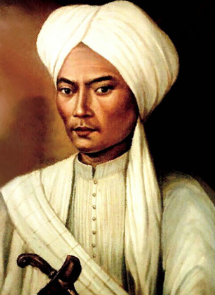

Pangeran Diponegoro: Pahlawan Perang Jawa
Pangeran Diponegoro lahir di Yogyakarta pada tanggal 11 November 1785 dengan nama kecil Raden Mas Ontowiryo. Ia adalah putra dari Sultan Hamengkubuwono III, tetapi tidak diangkat menjadi raja karena ibunya bukan permaisuri resmi. Meskipun demikian, Diponegoro tumbuh menjadi sosok yang sangat cerdas, sederhana, dan religius. Ia lebih senang tinggal di pedesaan, tepatnya di Tegalrejo, bersama rakyat biasa daripada hidup mewah di dalam istana.
Sejak muda, Pangeran Diponegoro sudah menaruh perhatian besar terhadap penderitaan rakyat. Ia melihat bagaimana Belanda memperluas kekuasaan, memungut pajak tinggi, dan menindas rakyat kecil. Selain itu, budaya Barat mulai masuk dan merusak tatanan moral serta adat masyarakat Jawa. Semua itu membuat Diponegoro merasa bahwa bangsa Indonesia harus bangkit melawan penjajahan.
Perlawanan besar Pangeran Diponegoro pecah pada tahun 1825, ketika pemerintah kolonial Belanda hendak membangun jalan yang melewati tanah leluhur keluarganya di Tegalrejo tanpa izin. Tindakan itu dianggap sebagai penghinaan terhadap kehormatan keluarga dan rakyat. Akibatnya, Tegalrejo diserang dan dibakar oleh tentara Belanda, sehingga Pangeran Diponegoro bersama para pengikutnya melarikan diri ke hutan. Dari sinilah dimulai Perang Diponegoro (1825–1830).
Dalam perjuangannya, Pangeran Diponegoro tidak hanya mengandalkan kekuatan senjata, tetapi juga semangat religius dan nasionalisme. Ia menyebut perjuangannya sebagai “Perang Sabil”, yaitu perang suci melawan ketidakadilan dan penjajahan. Banyak tokoh rakyat, ulama, dan bangsawan bergabung dalam perjuangan ini, membuat perang semakin luas hingga meliputi sebagian besar wilayah Jawa.
Selama hampir lima tahun, pasukan Diponegoro menggunakan strategi perang gerilya, menyerang secara cepat dan berpindah-pindah untuk menghindari kekuatan besar Belanda. Taktik ini sempat membuat Belanda kewalahan dan menderita banyak kerugian. Namun, seiring berjalannya waktu, Belanda mulai menggunakan strategi benteng stelsel (pembangunan benteng-benteng kecil di berbagai daerah), yang perlahan-lahan melemahkan posisi pasukan Diponegoro.
Akhirnya, pada tahun 1830, Pangeran Diponegoro setuju untuk berunding dengan pihak Belanda di Magelang. Namun, dalam perundingan tersebut, ia ditangkap secara licik oleh Belanda dan kemudian diasingkan ke Manado, lalu ke Makassar, Sulawesi Selatan. Di tempat pengasingannya itulah Pangeran Diponegoro menghabiskan sisa hidupnya hingga wafat pada 8 Januari 1855.
